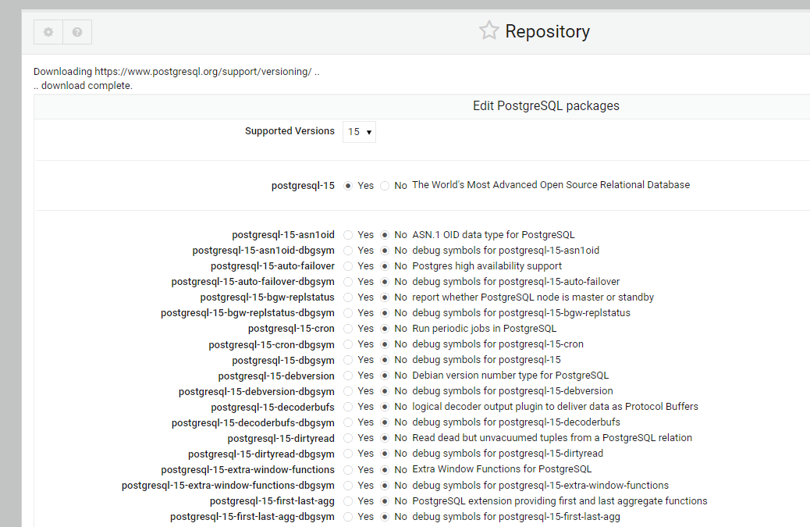

PostgreSQL¶
Table of Contents
Repository Manager¶
The Repository installer and manager allows you to install your selected version of the PostgreSQL Repository.
It can be access via the Pg Installer tab as shown below:

You can also use the manager to install and update packages as well.
As certain packages require EPEL for CentOS, the EPEL repository is installed as well when installing on CentOS.
The pg_hba.conf File¶
On installation via the Wizard, PostgreSQL is configured for use with SSL and uses scram-sha-256 authentication for all users and databases.
local all all trust
host all all 127.0.0.1 255.255.255.255 trust
host all all 0.0.0.0/0 scram-sha-256
host all all ::1/128 scram-sha-256
hostssl all all 127.0.0.1 255.255.255.255 scram-sha-256
hostssl all all 0.0.0.0/0 scram-sha-256
hostssl all all ::1/128 scram-sha-256
The postgresql.conf File¶
On installation via the Wizard, PostgreSQL is configured to accept connections on all interfaces as well as SSL connections.
#------------------------------------------------------------------------------
# CONNECTIONS AND AUTHENTICATION
#------------------------------------------------------------------------------
# - Connection Settings -
listen_addresses = '*'
)
# - SSL -
ssl = on
Above are excepts.
On installation, the native PostgreSQL Database Server module is also activated.
It is located under Servers > PostgreSQL Database Server

Basic Commands¶
Below are some basic PSQL commands.
PostgreSQL documentation, both from PostgreSQL.org and other sources, is extensive.
https://www.postgresql.org/docs/current/tutorial.html
https://www.postgresqltutorial.com/
Connecting to PostgreSQL¶
There are a number of options for viewing your PostgreSQL data.
- PSQL command line
- PgAdmin
- Control Panel
PSQL¶
Connect via SSH and su to postgres
root@demo:# su - postgres
Start psql
postgres@demo:~$ psql
psql (15.3 (Ubuntu 15.3-1.pgdg22.04+1))
Type "help" for help.
List all databases using the ‘\l’ command
postgres=# \l
List of databases
Name | Owner | Encoding | Collate | Ctype | ICU Locale | Locale Provider | Access privileges
------------+----------+----------+---------+---------+------------+-----------------+-----------------------
geostore | postgres | UTF8 | C.UTF-8 | C.UTF-8 | | libc |
geodb | geouser | UTF8 | C.UTF-8 | C.UTF-8 | | libc |
postgisftw | pgis | UTF8 | C.UTF-8 | C.UTF-8 | | libc |
postgres | postgres | UTF8 | C.UTF-8 | C.UTF-8 | | libc |
template0 | postgres | UTF8 | C.UTF-8 | C.UTF-8 | | libc | =c/postgres +
| | | | | | | postgres=CTc/postgres
template1 | postgres | UTF8 | C.UTF-8 | C.UTF-8 | | libc | =c/postgres +
| | | | | | | postgres=CTc/postgres
(5 rows)
Connect to target database (in this case, postgisftw) using the ‘\c’ command
postgres=# \c postgisftw
You are now connected to database "postgisftw" as user "postgres".
List tables in database using the ‘\dt’ command
postgisftw=# \dt
List of relations
Schema | Name | Type | Owner
--------+-------------------+-------+----------
public | configuration | table | pgis
public | countries | table | pgis
public | pointsofinterest | table | pgis
public | spatial_ref_sys | table | postgres
public | ways | table | pgis
public | ways_vertices_pgr | table | pgis
(6 rows)
Select country name from the countries table, limited to 10:
postgisftw=# select name from countries limit 10;
name
--------------------------
Zimbabwe
Zambia
Montserrat
Yemen
Vanuatu
Uruguay
Vietnam
Micronesia
Venezuela
Vatican
(10 rows)
Select country name from the countries table, limited to 10, sorting acecnded:
postgisftw=# select name from countries order by name ASC limit 10;
name
-------------------
Afghanistan
Albania
Algeria
American Samoa
Andorra
Angola
Anguilla
Antarctica
Antigua and Barb.
Argentina
(10 rows)
postgisftw=#